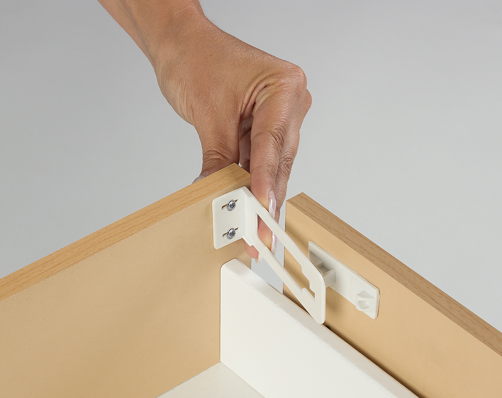
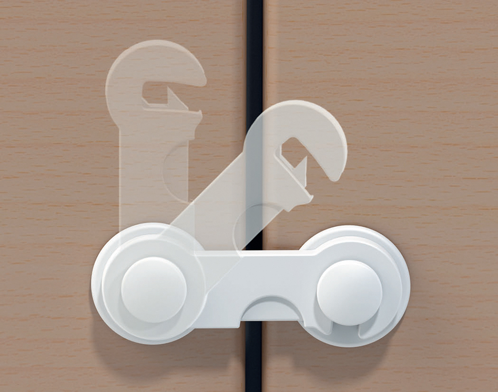

отравление
ЧТО ДЕЛАТЬ, ЕСЛИ РЕБЕНОК ПРОГЛОТИЛ ОПАСНЫЕ ВЕЩЕСТВА
храните лекарстве вне зоны досягаемости ребенка


попытайтесь выяснить, что именно проглотил ребенок;
не вызывайте у него рвоту;
если отравляющей жидкостью были щелочи или кислоты, не давайте ребенку пить;
не используйте растворы кислоты или щелочи для нейтрализации выпитого вещества;
при отравлении лекарствами, если ребенок в сознании, дайте ему большое количество воды;
если ребенок без сознания, необходимо повернуть его голову набок во избежание попадания рвотных масс в дыхательные пути;
во всех случаях отравления срочно вызывайте скорую помощь -103;
в больницу возьмите с собой образцы ядовитой субстанции и рвотной массы ребенка